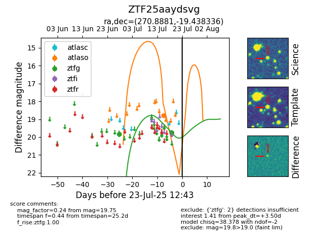

Target ZTF25aaydsvg at 2025-07-23 12:43, see:
FINK: fink-portal.org/ZTF25aaydsvg
Lasair: lasair-ztf.lsst.ac.uk/objects/ZTF25aaydsvg
ALeRCE: alerce.online/object/ZTF25aaydsvg
alt names
ZTF25aaydsvg (ztf,fink)
coordinates:
equatorial (ra, dec) = (270.8881,-19.43834)
galactic (l, b) = (10.2592,+1.27971)
photometry
last atlaso=18.80, ztfg=19.75
1 atlaso, 2 ztfg detections
